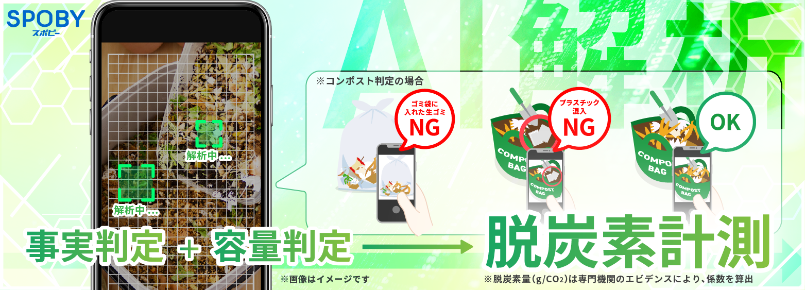

脱炭素AI解析機能_サービス促進広告
制作背景・意図
- 【概要】
-
- 使用媒体 : PRTimes
- サイズ : 横750px 縦270px
- プレスリリース内容 : 脱炭素AI解析機能_サービス促進広告
- 必須情報 : AI機能要素/サービスロゴ表示
- アプリ（SPOBY）について :
「SPOBY」は人の活動による脱炭素・健康増進を実現するアプリです。ユーザーはアプリを利用して活動を行うことでポイントを獲得でき、貯まったポイントはアプリ内に掲載されている様々なリワードと頑張ったご褒美として交換・獲得することができます。
- 【制作目的】
-
- 脱炭素・健康増進の取り組みを行うアプリ「SPOBY」において、コンポスト計測による「脱炭素AI解析機能」の新規開発をPRTIMESを通じて対外的に発表するための告知バナーとして制作しました。
- 【制作時に重視したポイント】
-
- プレスリリース用バナーであることから、一目でサービス内容が把握できる分かりやすさを最優先としました。コンポスト計測の仕組みを抽象的に説明するのではなく、実際の利用シーンを想起できるよう、スマートフォン画面や判定例（OK/NG）を用いて視覚的に理解できる構成としています。また、「事実判定」「容量判定」「脱炭素計測」といった機能の要点は、文字サイズや配色で強弱をつけ、視線誘導によって重要情報が自然に伝わる設計を意識しました。
- 【デザイン上の工夫点】
-
- 脱炭素・環境領域のサービスであることが直感的に伝わるよう、グリーンを基調とした配色とクリーンなトーンで全体を構成しています。AI解析という先進的な機能を表現するため、グリッドや幾何学的な要素を取り入れ、テクノロジー感と信頼感を演出しました。また、OK/NGの判定表現をアイコンとカラーで明確に分けることで、専門知識がなくても内容が理解できるビジュアルに仕上げています。